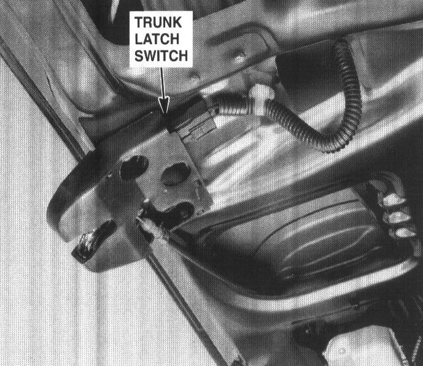

Operation CHARM
: Car repair manuals for everyone.
Home
>>
Acura
>>
1994
>>
Integra (GS-R) L4-1797cc 1.8L DOHC (VTEC)
>>
Repair and Diagnosis
>>
Body and Frame
>>
Sensors and Switches - Body and Frame
>>
Trunk / Liftgate Switch
>>
Locations
>>
Trunk Latch Switch
Trunk Latch Switch
119. Center of Trunk Lid (Sedan):

Center Of Trunk Lid